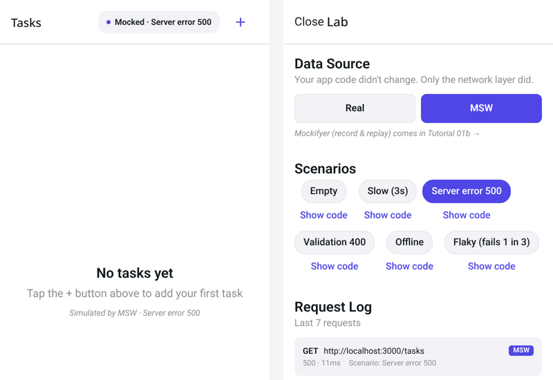

How to Mock APIs in React Native
To mock APIs in React Native, you need different tools for three different places: Jest tests, the running app in a simulator, and end-to-end tests with Detox or Maestro. This guide covers each one: MSW in Jest (tested), MSW and Expo in the running app (including the MSW 3 change that broke the old setup), Mirage JS, mock servers and the Android 10.0.2.2 gotcha, record/replay, and debugging tools.
TL;DR
For React Native, use MSW (msw/node) in Jest tests. For the running app, MSW 3’s @msw/react-native isn’t on npm yet (we got a registry 404 on 2026-10-15), so pin msw 2’s msw/native or point the app at a mock server. Use Mirage JS when you want an in-memory fake backend, a mock server like Mockoon or Prism for E2E, and a record/replay tool when you want to capture real responses.
| Approach | Jest tests | Running app | E2E (Detox/Maestro) | Records real traffic |
|---|---|---|---|---|
MSW (msw/node; in-app via msw 2 msw/native) | Yes (tested) | Yes (msw 2) | Yes (app built with mocks) | No |
| Mirage JS | Yes | Yes | Yes | No |
| Mock server (Mockoon / Prism / WireMock) | Possible | Yes (via base URL) | Yes | Mockoon, WireMock: yes |
| Mockifyer* | Node/Jest entry point per README | Yes (per README) | Yes, launch-argument scenarios (per README) | Yes |
*Built and maintained by the owner of devxtools.dev.
Three places you need mocks
- Jest tests (unit and component). Jest runs in Node, not on a device. You can use MSW’s Node integration, and you’re testing components with React Native Testing Library (RNTL).
- The running app (simulator, device, Expo Go or a dev build). No Node and no Service Worker. Mocks must patch
fetch/XMLHttpRequestinside the JS runtime, or the app must call a different base URL. - E2E (Detox, Maestro). A real build runs on a simulator or device. You either bundle in-app mocks (switched on by a launch argument or env var), or point the build at a mock server you control from the test.
Most confusion comes from using a tool designed for one place in another.
Mocking in Jest and RNTL with MSW
MSW intercepts fetch at the network level, so your component calls the real fetch and your tests describe responses, not implementation details. This is the setup we ran with React Native 0.88:
// src/mocks/handlers.js
import { http, HttpResponse } from 'msw';
import { API_URL } from '../api';
export const handlers = [
http.get(`${API_URL}/users/:id`, ({ params }) =>
HttpResponse.json({ id: Number(params.id), name: 'Ada Lovelace' })),
];Both tests passed. Three things tripped us up, and they’ll trip you up too:
- Jest config for ESM dependencies. msw 2.15 depends on ESM-only packages shipped as
.mjs(rettime,@open-draft/deferred-promise). The React Native preset doesn’t transform them, so we gotMust use import to load ES Module. - RNTL 14’s
renderis async. Withoutawait render(...)we got “renderfunction has not been called”. - MSW 3 vs MSW 2 in Jest. We used msw 2.15 so the same version works in Jest and in the app. MSW 3 renamed
onUnhandledRequesttoonUnhandledFrame.
Mocking in the running app
fetch inside the app, or send it to a mock server. Release builds always hit the real API.MSW in the app: the MSW 3 situation
MSW 3.0 (released 2026-09-28) removed the msw/native export. MSW’s docs now tell you to install @msw/react-native, but on 2026-10-15 npm install @msw/react-native fails with a 404: the package isn’t published.
Toggling mocks with __DEV__, env vars or a dev menu
__DEV__isfalsein release builds. Use it as an outer guard so mocks can never ship enabled.- An env var (
EXPO_PUBLIC_API_MOCKING, orreact-native-configin bare apps) chooses mocks per Metro session. - A dev-menu or in-app switch lets QA change scenarios without rebuilding.

fetch returns without a rebuild, and the request log shows which handler answered.Pointing the app at a mock server
A mock server runs on your machine (or in CI), and the app’s base URL points at it. Which host does the app use?
| Where the app runs | URL for a server on your machine |
|---|---|
| iOS Simulator | http://localhost:4010 (shares the Mac’s network) |
| Android Emulator | http://10.0.2.2:4010 (the emulator’s alias for host loopback) |
| Android, either | adb reverse tcp:4010 tcp:4010, then http://localhost:4010 |
| Physical device | Your machine’s LAN IP, e.g. http://192.168.1.20:4010 (bind to 0.0.0.0) |
Plain HTTP gotchas: Android blocks cleartext HTTP by default for apps targeting API 28+, and iOS App Transport Security restricts plain HTTP too.